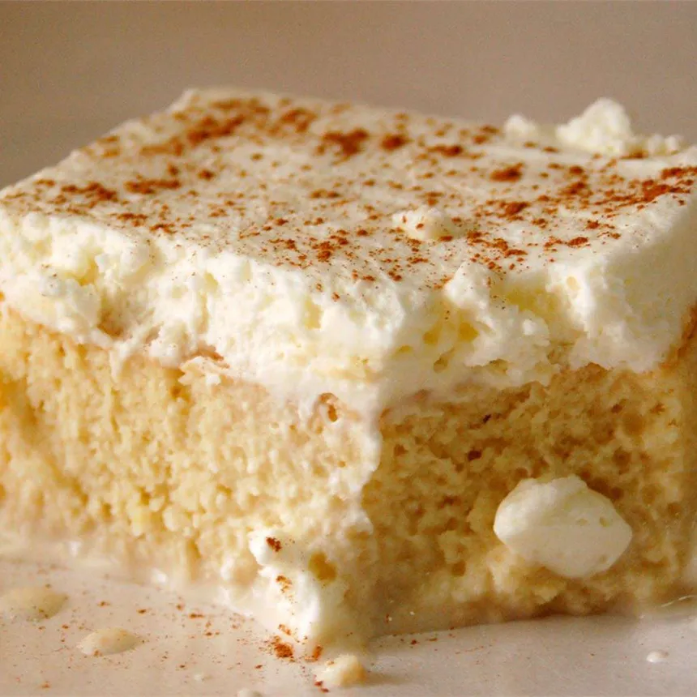

Tres Leches Cake

Tres leches cake is the best cake in the world. A latin dessert that
becomes sweeter with age. The cake is a great treat immediatly after
cooking but it's even better the following days after. Topped with
cinamon sugar and infused with a combination of milks this cake is amazing!
Ingredients
- sugar
- cinamon sugar
- 5 eggs
- milk
- vanilla extract
- all purpose flour
- baking powder
- sweetened condesed milk
- whipping cream
- strawberries or cherries
Directions
- Step 1: Preheat oven to 350F. Butter and flour
the bottom of 9in springform pan.
- Step 2: Beat egg yolks w/ 3/4 cup sugar until light
in color and doubled in voulume.
- Step 3: Stir in milk, flour, vanilla, and baking powder
- Step 4:in a small bowl beat egg whites until small
peaks form
- Step 5: Gradually add 1/4 cup sugar, then beat until firm.
- Step 6: Fold 1/3 of the whites into the yolk mixture
to lighten it; fold in remaining egg whites. Pour batter into prepared pan.
- Step 7: Bake in preheated oven for 50 minutes or until
cake tester is clean. Allow the cake to cool for 10 minutes.
- Step 8: Mix condensed, evaporated milk and 1/4 cup
whipping cream.
- Step 9: Set aside 1 cup of the milk mixture and refridgerate.
Pour remaining mixture over the cake slowly until absorbed.
- Step 10: Whip remaining cream until it thickens and reaches
spreading consistency.
- Step 11: Frost cake with whipped cream, cinamon sugar and
garnishes. Store the cake in the refridgerator and enjoy!
Recipe List